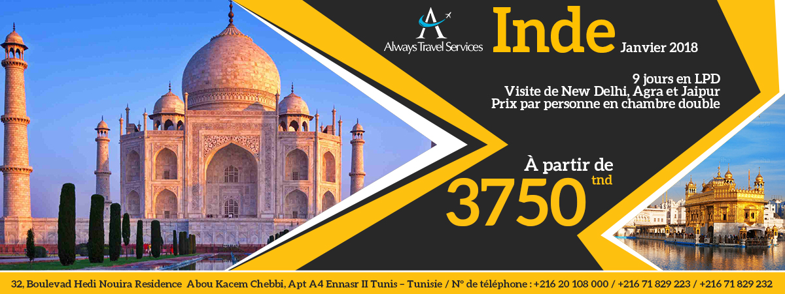

Inde
Janvier 2018
A partir de 3750 tnd
Jour 1 : 10 Janvier 2018 Tunis-Dubai :
Décollage de Tunis sur vol Emirates EK 748 à 14h55.Arrivée à Dubai à 23h45 heure locale. Temps de transit à l’aéroport international de Dubai.
Jour 2 : 11 Janvier 2018 Dubai –Delhi -Visite de New Delhi-New Delhi (Diner) :
Décollage de Dubai sur vol EK 510 à 04h00 .Arrivée à Delhi à 08h40 heure locale. Formalités douanières et assistance et transfert par notre correspondant local à l’hôtel. Arrivée au alentour de 11h30 à votre hôtel .Remise des chambres 13h00-14h00.
Départ vers 16h00 pour la visite de pour une première découverte de la ville. New Delhi est la capitale de l'union indienne avec Old Delhi et New Delhi, réunies en une seule agglomérationd
Visite de New Delhi : partie aristocratique, cité résidentielle aux beaux jardins et aux parcs immenses, Visite de « l’India Gate », arc de triomphe indien.
Visite panoramique de l’India Gate, l’arc de triomphe indien, "Connaught Place" et Jan Path, importantes artères commerciales ainsi que Le Raj Ghat : beau parc d'une grande simplicité, où fut incinérée Gandhi.
Visite du Temple Sikh : Gurudwara Bangla Sahib. C'est le plus grand temple sikh de Delhi. Tout de marbre blanc, coiffé d'un dôme doré et agrémenté d'un vaste bassin pour les ablutions des fidèles, il fut bâti au XVIIIe siècle en souvenir de la visite du huitième Gourou Harkrishan, en 1664.
Ensuite temps libre pour visitez le marché tibétain et en fin d’après midi retour à l’hôtel en fin de journée, dîner en buffet à votre hôtel et logement.
Jour 3 : 12 Janvier 2018 Delhi (Petit déjeuner -diner) :
Petit déjeuner, départ vers la vieille ville de Delhi. C’est une fascinante cité grouillante de vie avec sa foule colorée de marchands et de badauds qui se pressent dans les petites ruelles et les nombreux bazars entourant la grande mosquée (Jama Masjid). La découverte commence avec un départ à partir du Fort Rouge (de l’extérieur): cette impressionnante forteresse de grès rouge, vaste citadelle du XIème siècle, est un haut lieu de la splendeur moghole et un témoignage de ce que fut sa puissance. Arrivée au Jama Masjid et visite de cette immense mosquée, la plus grande de l'Inde, construite au XVIIème siècle au cœur du bazar du vieux Delhi appelé Chandni Chowk: longue rue qui fut l'axe principal de la ville moghole, restée très populaire et animée. C'est l'artère la plus importante du vieux Delhi. Une surprise vous attendra à la porte de la Mosquée pour découvrir les bazars de Delhi.
Déjeuner libre, départ ensuite pour la visite le majestueux Tombeau d'Humayun. En après midi, temps libre au centre ville pour shopping, retour vers 19h00 vers l’hôtel. Diner buffet à l’hôtel et logement.
Jour 4 : 13 Janvier 2018 Delhi- Agra 03H30 de route (Petit déjeuner et diner) :
Réveil matinal, petit déjeuner à l’hôtel. Remise de vos chambres et départ vers 08h30 en bus pour Agra (03h30 de route environ), l’un des hauts lieux de l'art et de l'architecture mogholes la ville qui en fait la ville la plus célèbre de l’Inde grâce au Taj Mahal. Arrivée vers 12h00-12h30. Départ directement pour la visite du Fort Rouge dont les hautes murailles de grès rose dominent la rivière Yamouna et marque la naissance du style impérial.
Vers 14h00 transfert vers votre hôtel, remise de vos chambres, juste le temps de vous rafraichir et départ vers 15h00 pour la visite avec le fameux "Taj Mahal", lumineux mausolée de marbre blanc incrusté de pierres semi-précieuses, bâti par l'empereur Shah Jahan à la mémoire de son épouse Mumtaz Mahal. Considéré comme la 8éme merveille du monde, c’est le monument le plus célèbre de toute l'Inde. Retour vers votre hôtel. Diner buffet à l’hôtel et logement.
Jour 5 : 14 Janvier 2018 Agra - Fatehpur Sikri - Jaipur (235kms / 05hrs) ( Petit déjeuner et diner) :
Petit déjeuner à l’hôtel. Départ vers 08h30 vers Jaipur. Arrêt en route pour la visite de Fatehpur Sikri. Lieu des plus remarquables du point de vue artistique et architectural. Fatehpur Sikri est l'ancienne capitale de l'empereur Akbar, construite en 1571.
La ville impériale renferme des bâtiments en grès rose aux formes architecturales les plus variées: palais, pavillons, cours et bassins, mosquées, caravansérail. De nos jours Fatehpur Sikri est devenu très connue par le monde entier grâce au feuilleton indien connu comme le Palais ou avait habité Jodabai , l’indienne devenue sultane et épouse de l’empereur Moghol !
Une fois la visite terminée, continuation vers Jaipur. Arrivée et installation à l’hôtel Déjeuner libre.
Après midi libre à votre rythme pour visiter Jaipur et ses bazars. Jaipur est assurément l’une des plus belles villes indiennes. Diner buffet à l’hôtel et logement.
Jour 6 : 15 Janvier 2018 Jaipur -Fort Amber -Jaipur (Petit déjeuner et Diner) :
Réveil matinal, petit déjeuner et départ vers 07h30-08h00 pour une journée de visite de la ville de Jaipur capitale du Rajasthan.
Vous commencerez votre visite par le Fort d'Amber (montée à dos d’éléphant / descente en Jeep)- situé à 12 km du centre-ville le long d'une falaise.
Déjeuner libre. Après midi arrêt pour prendre la photo de Hawa Mahal ‘Palais des Vents’ (extérieur) et visite du city Palace, dans lequel ce trouve le musée de l'armurerie et les trésors personnels de la famille du Maharaja « Jai Singh ».
Reste de la journée libre à votre rythme dans la veille ville de Jaipur pour le shopping ou vous balader à votre rythme. Diner buffet à l’hôtel et logement.
Jour 7 : 16 Janvier 2018 Jaipur - Delhi (255kms / 5.5hrs)( Petit déjeuner et Diner) :
Réveil matinal et petit déjeuner retour vers Delhi, (environ 05h00 de route).Un stop est prévu en cours de route !
Déjeuner libre. Arrivée Delhi, temps libre au centre de Delhi pour profiter à nouveau de la ville et faire du shopping. Transfert vers votre hôtel vers 19h00, remise des chambres. Diner buffet à l’hôtel et logement.
Jour 8 : 17 Janvier 2018 Delhi (Petit déjeuner et diner) :
Petit déjeuner, journée libre à Delhi pour Shopping (bus à disposition), diner à l’hôtel.
Jour 9 : 18 Janvier 2018 Delhi-Dubai (Petit déjeuner et diner) :
Petit déjeuner, remise des chambres à 12h00. Mise à disposition des bus pour aller faire du shopping dans les 3 mall à new Delhi. Diner dans un restaurant au centre ville (menu fixe, boissons non incluses) .Transfert vers l’aéroport à 00h00.
Jour 10 : 19 Janvier 2018 2017 Dubai-Tunis :
Décollage de Delhi sur EK 513 à 04h10.Arrivée à Dubai à 06h35 heure locale. Temps de transit à l’aéroport de Dubai et décollage sur EK 747 à 09h20.Arrivée à Tunis à 11h30 heure locale.
Fin des services.
| La ville | Nom des hôtels ou catégorie similaire |
|---|---|
| New Delhi | Hotel Radisson, Dwarka / Delhi 5☆ norme locale |
| Agra | Hotel Ramada Plaza 4☆ norme locale |
| Jaipur | Hotel Radisson Jaipur 4☆ norme locale |
Tarif par personne pour le package partageant une chambre double :
3750 TND
Supplément single : 950 TND
Le prix ne comprend pas :
Les frais de visa pour l’Inde à ce jour : 235 TND / personne en espèce.
Tous les services non mentionnés dans le programme.
Les pourboires pour les : guides, chauffeur, assistant du chauffeur, les porteurs de bagages dans les hôtels, 35 USD par personne pour tout le séjour à récupérer dés l’arrivée en Inde OBLIGATOIRE.
Les repas non mentionnés.
Les dépenses d’ordre personnel (tel, repassage etc.…).
Les taxes d’aéroport peuvent changer à la hausse avant départ.
INFOS VERITE :
- Attention si les éléphants ne sont pas disponibles pour montée au fort D’Amber, la montée au fort se fera en Jeep
- Pour ceux qui ne veulent pas monter à dos d’éléphant au fort d’Amber, ils monteront en Jeep
- Vous avez droit à une bouteille d’eau par jour dans le bus, pour ceux qui veulent plus de bouteille d’eau /jour l’assistant de notre chauffeur se chargera d’en acheter et on le payera sur place
- Quitter la ville de Jaipur tôt le matin vous permettra d’arriver plus tôt à New Delhi et profiter d’avantage de votre journée.
EN CAS DE MODIFICATIONS DUES A DES FACTEURS INDEPENDANTS DE NOTRE VOLONTE :
Dans le cas où le programme subirait des modifications dues à des facteurs extérieurs indépendants de notre volonté, notre représentant essayera d’apporter une prestation équivalente dans l’esprit du programme initial. Ces prix ont été calculés le 24/07/2017. Sur la base de 20 personnes payantes voyageant ensembles basés les hôtels cités, de la période indiquée et les tarifs aériens, hôteliers et terrestres en vigueur le jour indiqué ; ces tarifs pourront être revus à la hausse en fonction des tarifs et taux de change en vigueur lors de votre engagement ferme. Toute modification de la date, d’un ou plusieurs hôtels ou du nombre de participants entraînera un réajustement de cette cotation. Nos prix sont calculés en Dollars avec un taux de change USD-TND 1USD=2.47 TND
Les taxes aéroportuaire peuvent changer à la hausse ce qui fera changer le tarif de l’aérien.
Pour le visa pour l’Inde :
Les participants doivent passer directement à l’ambassade avec le dossier que nous préparons pour déposer leurs
- Le passeport valable 8 mois après retour
- 2 photos d’identité fond blanc et visage et oreilles dégagées
- 235 TND (à ce jour)
- Assurance voyages
- Photocopie de la carte d’identité
- Relevé bancaire pour les 3 derniers mois
- Attestation de travail, Attestation ou carte de retraite pour les retraités, registre de commerce